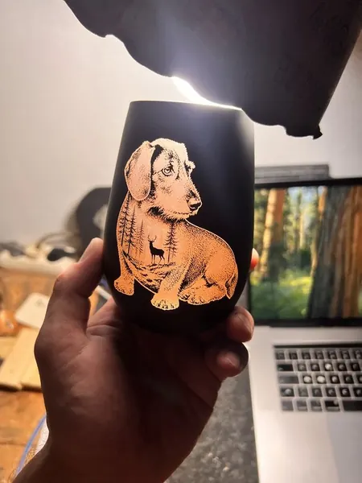
Ein Andenken an den Lieblingshund
Schwarzes Glas mit persönlicher Hundemotiv-Gravur als Erinnerung an einen verstorbenen Hund.
Materialien / Glas
Individuelle Arbeiten von Herzmade aus Döbern. Lass dich inspirieren und bring deine eigene Idee mit.
Bei Herzmade aus Döbern (03159, Lausitz) entstehen hochwertige Gravuren auf Glas – elegant, persönlich und mit besonderer Wirkung. Ob edle Weingläser, dekorative Glasobjekte oder Erinnerungsstücke: Glas bietet eine einzigartige Kombination aus Klarheit, Tiefe und Stil.
Glas lässt sich auf vielfältige Weise veredeln – von dezent bis ausdrucksstark:
Besonders bei lackierten Gläsern entstehen durch die Gravur starke Kontraste – das Motiv hebt sich klar und edel vom Untergrund ab.
Ein besonderes Highlight sind gravierte Weihnachtskugeln aus Glas. In verschiedenen Größen (ca. 6 cm, 8 cm oder 10 cm Durchmesser) entstehen individuelle Motive, Namen oder Bilder mit beeindruckender Detailtreue.
Anders als bei Folien oder Aufklebern wird hier die Lackierung durch den Laser filigran entfernt. Dadurch entsteht direkt im Glas ein dauerhaftes, edles Motiv – fein, hochwertig und mit besonderem Charakter. Gerade auf den dünnen Glaskugeln wirkt dieser Effekt besonders elegant und einzigartig.
Glasgravuren sind eine stilvolle Geschenkidee für Muttertag, Frauentag, Hochzeiten oder Jubiläen. Auch als persönliches Geschenk unter Freundinnen oder als elegantes Präsent mit individueller Botschaft sind gravierte Gläser besonders beliebt. Weihnachtskugeln bieten zusätzlich eine ganz besondere Möglichkeit für persönliche Geschenke in der Weihnachtszeit.
Jedes Glas wird individuell gestaltet und mit viel Feingefühl umgesetzt. So entstehen persönliche Einzelstücke – modern, hochwertig und genau passend zum Anlass.
Hinweis: Markennamen wie „Stölzle“ dienen lediglich als Beispiel. Alle Markenrechte liegen bei den jeweiligen Inhabern.
So persönlich kann Glas sein
Echte Einzelstücke aus unserer Werkstatt.
Tippe auf ein Bild für die Großansicht.

Schwarzes Glas mit persönlicher Hundemotiv-Gravur als Erinnerung an einen verstorbenen Hund.
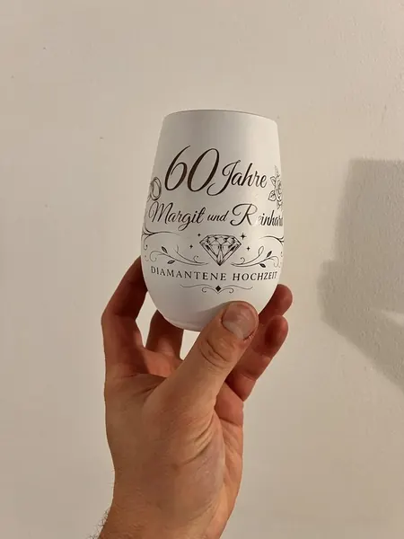
Weißes Glas mit persönlicher Gravur zur diamantenen Hochzeit.
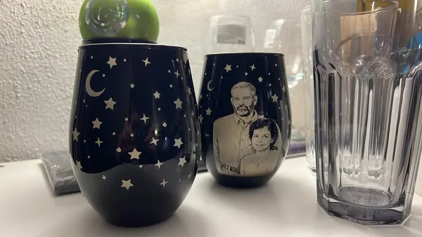
Persönliche Fotogravur auf schwarzem Glas als Erinnerung an einen Menschen.
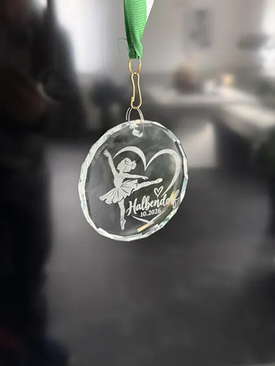
Gravierte Glasmedaille mit Tänzerin im Herz, „Halbendorf“ und „10.2026“ am grünen Band – als Dankeschön für eine Gruppe Mädchen, die beim Rentnercafé in Halbendorf aufgetreten ist.
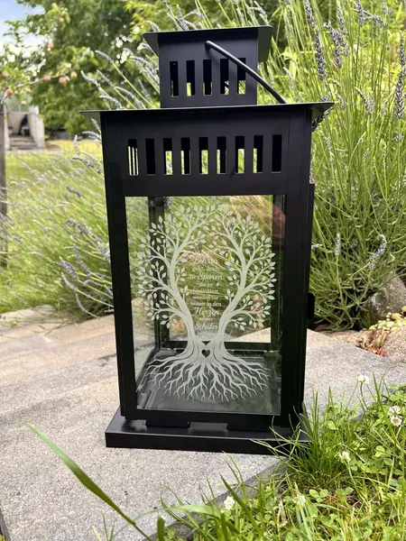
Schwarze Laterne mit graviertem Lebensbaum und persönlicher Botschaft – ein Geschenk der Klasse an ihre Lehrerin zum Schuljahreswechsel.
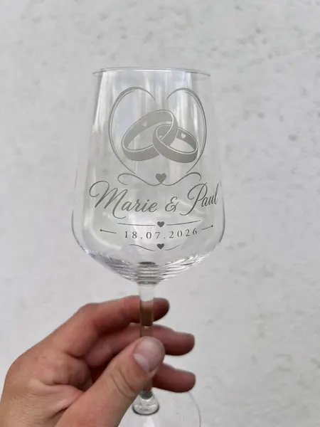
Klares Weinglas mit gravierten Ringen, Namen und Hochzeitsdatum.
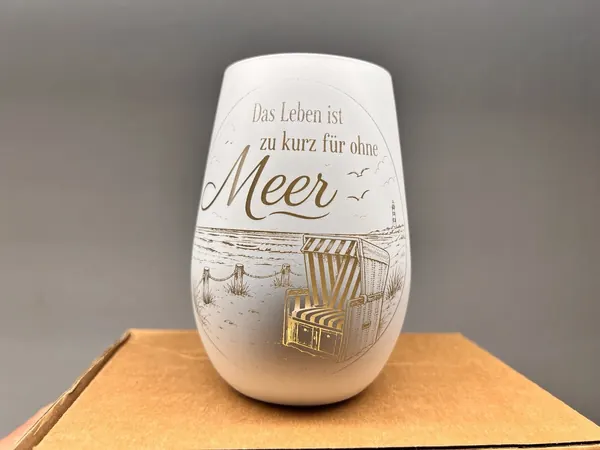
Weißes Windlicht mit Spruch und maritimem Strandmotiv.
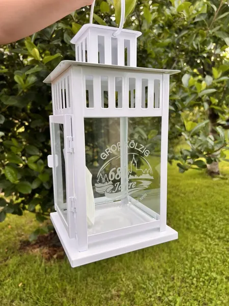
Weiße Laterne mit individueller Glasgravur anlässlich des Ortsjubiläums „680 Jahre Groß-Kölzig“.
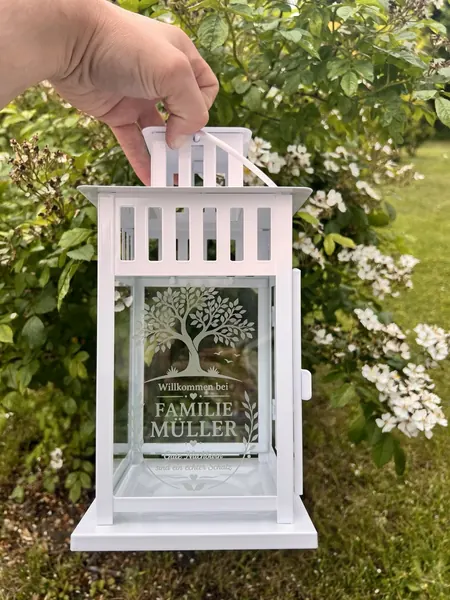
Weiße Laterne mit Familiennamen und graviertem Lebensbaum.
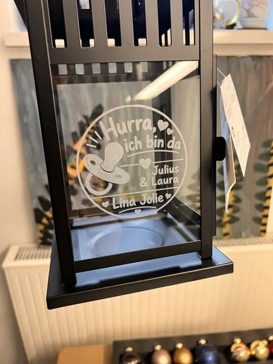
Schwarze Laterne mit persönlicher Glasgravur zur Geburt.
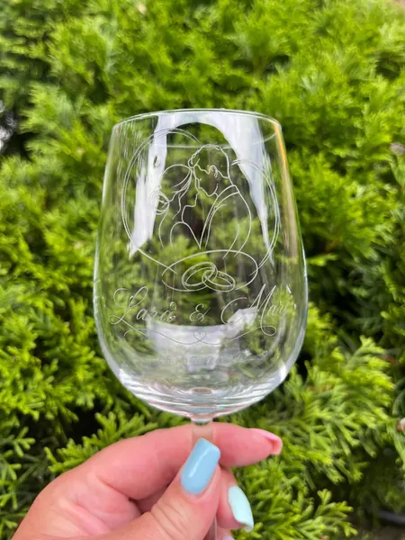
Klares Weinglas mit filigranem Linienmotiv vor grünem Gartenhintergrund.
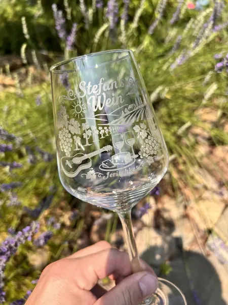
Klares Weinglas mit Namen, Datum und persönlichem Motiv im Freien.
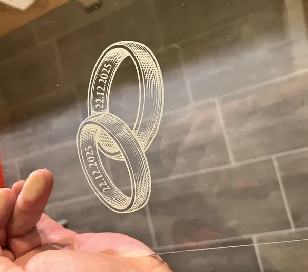
Ringe zur Hochzeit auf einer Glasscheibe die dann in eine Laterne eingesetzt wurde.
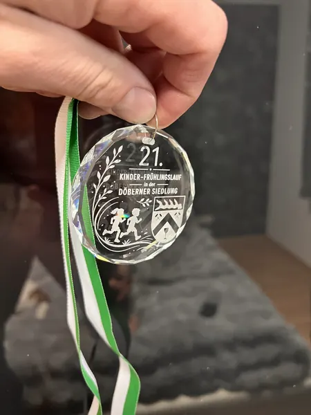
Wir durften die Glasmedaillen zum 21. Kinder-Frühlingslauf in Döbern gestalten
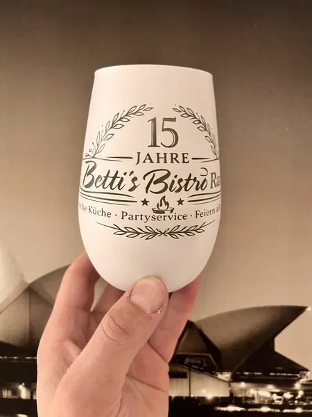
Anlässlich eines 15 jährigem Firmenjubiläum durften wir ein Windlicht in elegantem weiß , innen Gold gravieren
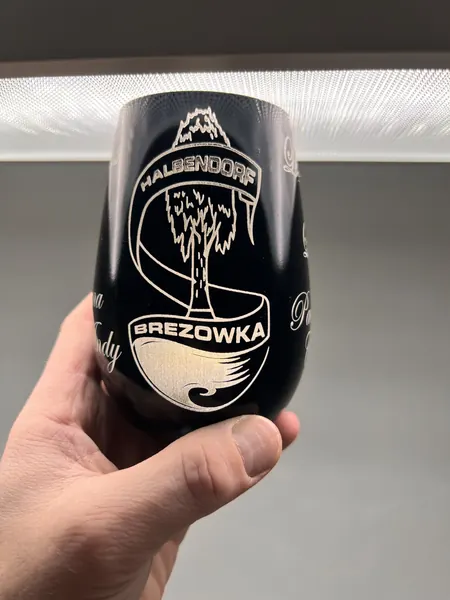
Hier haben wir das Logo von Halbendorf (bei Weißwasser) auf ein schwarzes, innen silbernes Glas graviert.
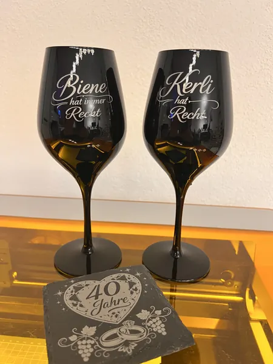
Schwarze Weingläser von Stölzle mit einer humorvollen persönlichen Gravur zum 40. Hochzeitstag.
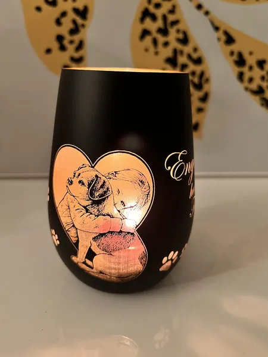
Ein Foto unserer Tochter mit Familienhund Buddy, aufbereitet und auf ein schwarzes, innen goldenes Glas graviert.
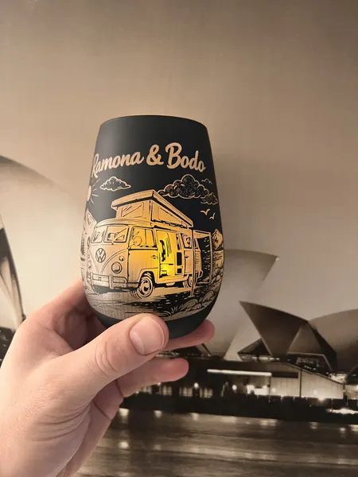
Ein schwarzes Glas mit einem persönlich gestalteten Campingmotiv für Freunde des Campings.
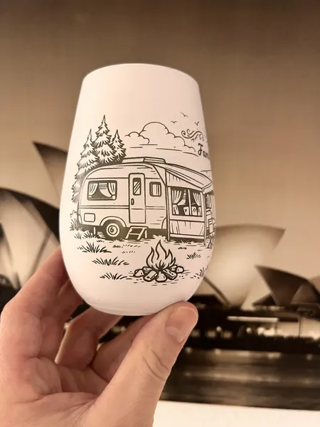
In dieser Variante haben wir probiert die Grafik auf ein weißes Glas zu gravieren.
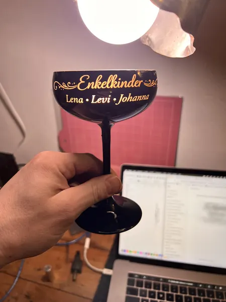
Ein schmales Weinglas mit den Namen der Enkelkinder als persönliches Geschenk für die Oma.
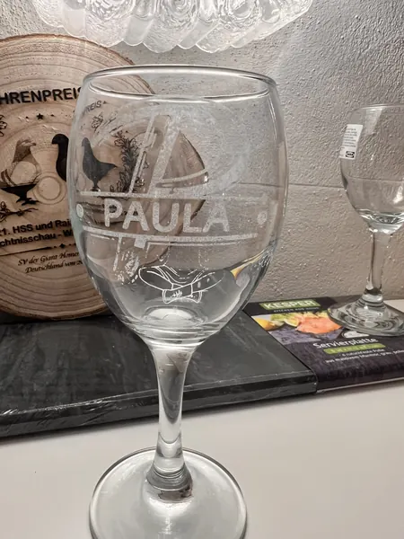
Für meine Frau habe ich ihren Namen mit einem typografischen Stil auf ein transparentes Weinglas graviert.
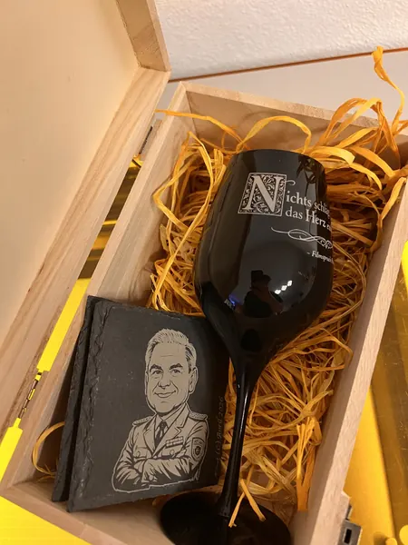
Eine Kombination aus schwarzen, gravierten Weinglas in einer Holzbox mit persönlicher Gravur und passenden Schieferuntersetzer.
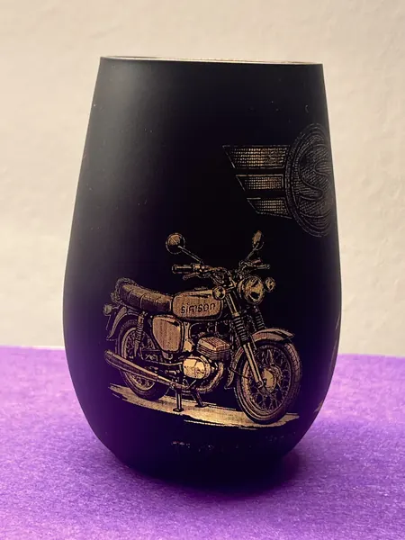
Moped aus DDR Fabrikat auf Matt schwarzen Windlicht
Von deiner Idee zum Einzelstück
Wähle ein Produkt und lass dich von unseren Arbeiten inspirieren.
Erzähl uns vom Anlass, deinem Wunschmotiv und dem Menschen, dem du eine Freude machen möchtest.
Gestaltung, Ausführung und Preis stimmen wir persönlich mit dir ab.